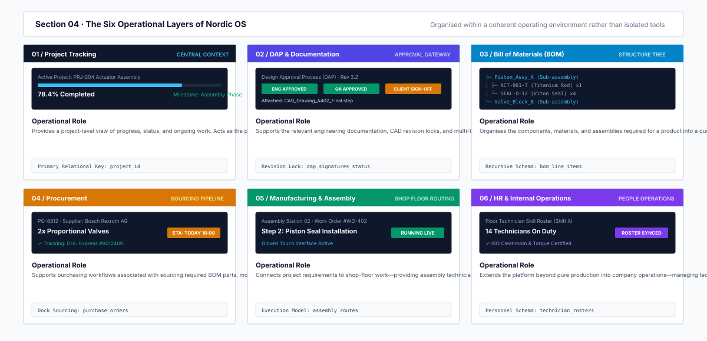
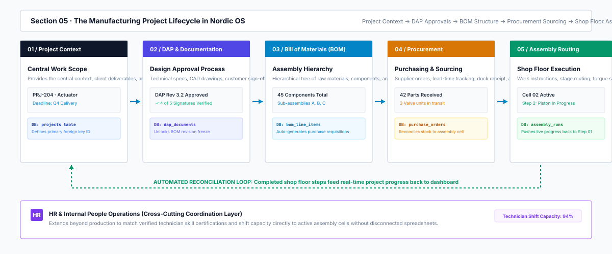
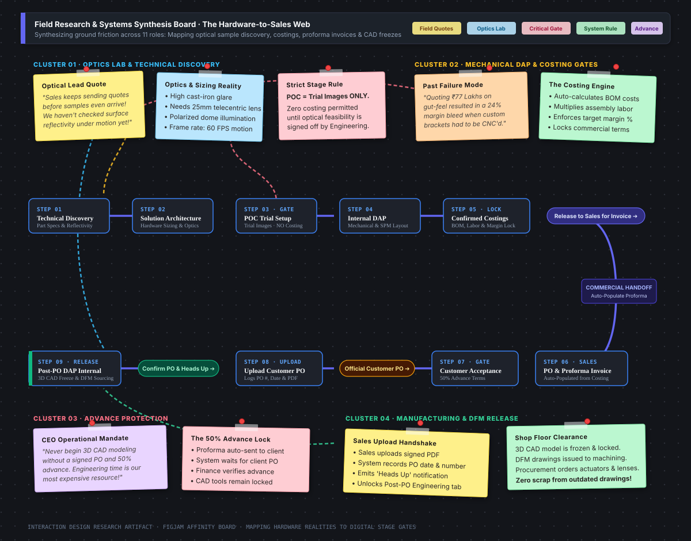
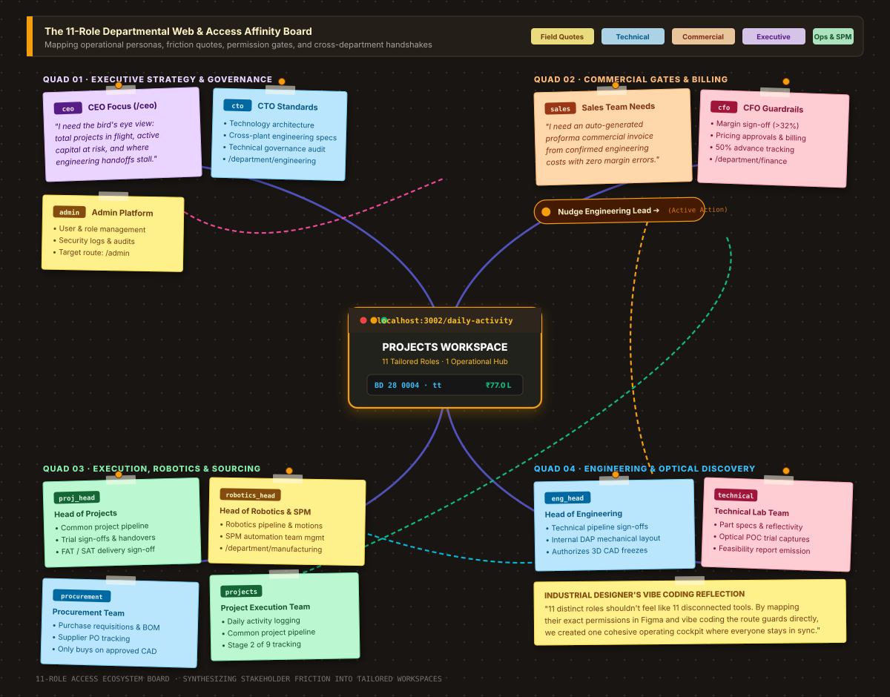
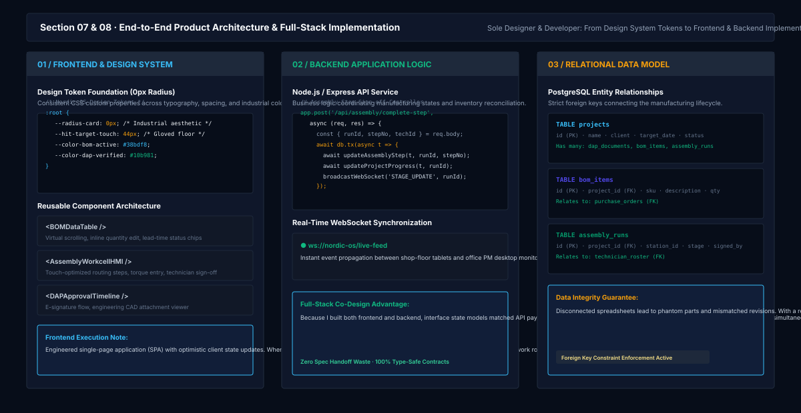
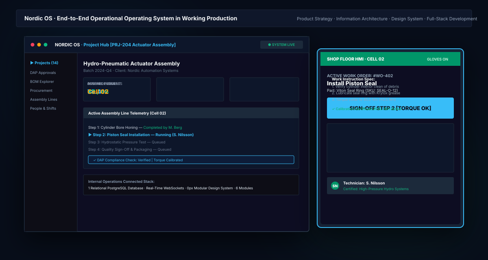

Connecting Machine Vision Engineering, Hardware Quotations, and Shop-Floor Handoffs
Nordic OS · An internal operations workspace designed and built by an Industrial Interaction Designer—unifying physical optical testing, 3D CAD design approval stages, role-wise access control, and rapid vibe coding to replace broken spreadsheets between Sales, Engineering, and Procurement.

Eliminating the disconnect between physical machine vision testing, commercial quotes, and shop-floor assembly.
In high-precision machine vision and industrial automation, projects are grounded in physical realities. A customer sends sample parts with irregular reflectivity, curved surfaces, or challenging surface finishes. Before anyone can promise a price or cycle time, an optical engineer has to test camera sensors, lenses, and lighting in the lab.
Yet in day-to-day operations, teams were constantly working out of sync. Sales would draft commercial quotations and proforma invoices before optical feasibility was verified. Engineering would spend weeks detailing 3D CAD models before the customer confirmed advance payment terms. And Procurement sat waiting on bills of materials while physical samples sat untracked in the incoming mail bin.
Nordic OS was created to replace scattered WhatsApp messages, private Excel cost sheets, and untracked PDFs with an intuitive internal operating system. As an Industrial Interaction Designer who learned modern software development and vibe coding, I designed the platform to bridge hardware physics, commercial handoffs, and team permissions into one clear visual workflow.
A machine vision quotation should never be sent without optical validation, and physical 3D CAD should never be frozen without a confirmed commercial commitment.
Industrial interaction design meets vibe coding: Designing the workflow and building the tool.
As an Industrial Interaction Designer, I think in terms of physical objects, ergonomics, and the flow of material and information. But I didn't want my work to stop at static Figma screens that get misinterpreted during development. By picking up modern software development and vibe coding, I was able to design the system flows and directly build the interactive web interfaces myself.
Working alongside just one software developer (who supported backend API connections) and reviewing daily flows directly with our CEO, I owned the product experience from physical discovery to running web prototype:
9-Stage Pipeline Mapping
Traced every handoff from part reflectivity testing and optical sizing to mechanical DAP and 3D CAD freeze.
11 Departmental Personas
Architected tailored views and stage permissions for Admin, CEO, CTO, CFO, Sales, Engineering, and Robotics.
High-Density Interface
Designed the central control room with live stage progress (Stage 2 of 9), project values (₹77.0 L), and quick nudges.
Working Code Prototyping
Brought Figma concepts directly into a working web app (localhost:3002), iterating on live layouts and tactile buttons.
Cross-Functional Buy-In
Validated the tool directly with project engineers, sales leads, and our CEO to ensure every stage solved real friction.
This combination of industrial design thinking and rapid vibe coding meant we didn't waste months in abstract spec docs. We could test real buttons, review live sample statuses, and tweak operational rules on the fly.
Premature pricing, unconfirmed CAD freezes, and fragmented handoffs.
In custom industrial automation, hardware mistakes are expensive. Sizing the wrong camera lens or building a mechanical frame without verified sample parts can cost hundreds of thousands of rupees in rework. Before Nordic OS, three critical bottlenecks created recurring friction:
Quoting Before Optical Validation
Sales teams were eager to send commercial quotations, but without a confirmed Proof of Concept (POC) validating camera resolution and lighting angles, quotes routinely missed crucial hardware costs.
Premature 3D CAD Detailing
Engineering would invest 40+ hours modeling detailed 3D CAD assemblies and Design for Manufacturing (DFM) layouts before the customer had formally signed the PO or paid the 50% advance.
Siloed Handoffs & Blindspots
Sales, Engineering, and Procurement communicated through disjointed spreadsheets and emails. When physical samples arrived at the lab, nobody outside the receiving dock knew they were ready for trial.
Sales shouldn't issue a proforma invoice until engineering signs off on feasibility, and engineering shouldn't freeze 3D CAD until the customer signs the PO.
Structuring operations into dedicated departmental workspaces.
Instead of forcing every team member into a bloated, one-size-fits-all ERP, Nordic OS breaks the company's daily operations into focused, role-specific navigation pills visible in the top navigation bar:
Overview & Executive KPIs
Gives company leadership and executive stakeholders high-level bird's-eye metrics across active projects in flight.
Sales & Business Development
Dedicated pipeline tracking customer inquiries, auto-populated proforma commercial invoices, and signed PO uploads.
Projects Workspace (Central Hub)
The daily operational command center—monitoring active project cards (e.g., BD 28 0004 · ₹77.0 L), 9-stage progress, and handover details.
Engineering & Technical Pipeline
Where engineers log part reflectivity, capture optical trial POCs, manage feasibility reports, and execute 3D CAD freezes.
Procurement & BOM
Connects confirmed engineering quotations directly to component purchase orders, tracking vendor lead times and warehouse receipt.
Admin & Security Setup
Separate governance panel for user onboarding, team credential assignments, and role-wise permission configurations.
By tailoring these views to each department, nobody is overwhelmed by unrelated data, but everyone shares the exact same live project status.

Connecting hardware discovery to commercial invoicing and shop-floor CAD freeze.
In Nordic OS, progress isn't just an arbitrary percentage bar. It is governed by physical milestones and formal departmental handshakes. A project advances only when the responsible team completes their verified step:
Technical Discovery → Hardware Sizing → POC Trial → Internal DAP → Confirmed Costings → Proforma Invoice → Customer Acceptance (50% Advance) → Signed PO Upload → Post-PO CAD Freeze
This flow solves the classic hardware dilemma: Engineering can focus on optical sample testing without premature commercial pressure, while Sales gets automatically populated proformas with guaranteed margins the moment technical feasibility is confirmed.

05A — Field Research & Systems Synthesis: The Hardware-to-Sales Web
Rather than jumping into UI wireframes or developer schemas, I built a design research board using sticky notes, field interview quotes, and interrelated dependency webs. This synthesis visualizes why hardware projects were failing: Sales was quoting prices before physical sample parts arrived at the optics lab, and Engineering was wasting weeks detailing 3D CAD models before customers signed advance terms.

Optical Testing & POC (No Costing)
Technical discovery catalogs part specs and surface reflectivity. Hardware sizing establishes camera resolution and optics. POC captures trial images under motion—with commercial costing strictly locked until optics pass.
Internal DAP & Confirmed Costing
Engineering completes the mechanical layout and system architecture. The costing engine compiles the Bill of Materials (BOM), labor hours, profit margin, and commercial terms into a verified quote approved for Sales release.
Proforma Invoice & 50% Advance
Sales auto-populates the proforma commercial invoice directly from confirmed costings. The quote is issued to the client under standard 50% advance terms, awaiting customer review and sign-off.
Signed PO & Post-PO 3D CAD Freeze
Sales uploads the signed official customer PO (logging PO #, date, and signed PDF). Only then is Post-PO DAP unlocked for detailed 3D CAD freeze, Design for Manufacturing (DFM), and component procurement.
05B — The 11-Role Departmental Web & Access Affinity Board
An internal operations system only succeeds if every team member sees exactly what they need to do their job without visual noise or unauthorized edit privileges. On a dedicated affinity board, I clustered the 11 key operational roles—synthesizing their direct friction quotes, target routes, and cross-department handshakes around the central Projects Workspace hub.

CEO, CTO & Admin
admin: Platform config, user & role management, and security logs (/admin).
ceo: Company-wide executive dashboard, strategic KPIs, and oversight (/ceo).
cto: Engineering standards, technology architecture, and technical governance.
Sales Team & CFO
cfo: Financial ops, project margins, pricing approvals, and billing (/department/finance).
sales: Sales pipeline, commercial inquiries, and auto-populated proforma generation (/department/business-development).
Head of Engineering & Tech Team
eng_head: Technical pipeline, project execution oversight, team management, and design sign-offs.
technical: Optical part specs discovery, trial image captures, and POC feasibility reports.
Projects, Robotics & Procurement
proj_head: Common project pipeline, trial sign-offs, and FAT/SAT delivery.
robotics_head: Special Purpose Machinery (SPM) and automation pipelines.
procurement: Component BOM requisitions and supplier PO tracking.
Designing the Projects Workspace: High-density clarity for active hardware in flight.
The core daily touchpoint of Nordic OS is the Projects Workspace (hosted locally at localhost:3002/daily-activity). Rather than hiding information behind nested navigation, the interface surfaces active projects as rich operational cards:
Project Status Cards
Cards like BD 28 0004 · Rung 2 · tt (Valued at ₹77.0 L) display stage ownership, account leads, and an expandable 9-segment progress bar showing POC (Client) · Stage 2 of 9.
Contextual Action Prompts
When a step is blocked, Nordic OS clearly displays the bottleneck: Step 5 · Customer Feasibility Trial Report · Awaiting Engineering POC captures · Action With: Engineering with tactile action buttons.
Direct Inter-Departmental Nudges
Instead of sending detached emails, sales leads can click Nudge Engineering Lead or Prepare Drawing & Specs Early → to unblock tasks directly within the workspace.
Zero-radius geometry, high-density typography, and standardized operational tokens.
I built the Nordic OS design system specifically for technical industrial operations. Unlike consumer web apps that rely on rounded corners and generous whitespace, manufacturing tools require precision, dense scannability, and screen efficiency.
The design system enforces a strict 0px border-radius philosophy: panels, cards, data table cells, and status indicators fit together like milled machine blocks. This maximizes tabular data density on desktop displays while giving tablet HMIs clean, unmistakable touch zones.
Industrial software should feel like precision equipment: dense, legible, zero visual noise, and engineered for high-throughput daily use.
From Figma whiteboard to running code: Prototyping at localhost:3002.
Rather than stopping at static design mockups, I embraced vibe coding to rapidly bring the Projects Workspace into a live, interactive web application. By writing the frontend code directly, I could test real state handoffs and refine user interactions in real time:
Interactive Frontend Components: Built reactive project cards, stage steppers (Stage 2 of 9), and pipeline tab switchers (Technical Pipeline, Project Pipeline Execution, Procurement & BOM, Sales Pipeline) that respond instantly to user clicks.
Close Collaboration with 1 Developer: I worked closely with our single backend engineer, who wired up the API endpoints and authentication handlers while I focused on the interface logic, component states, and workflow design.
Iterative Reviews with the CEO: Rather than presenting theoretical slides, we reviewed live builds running at localhost:3002 directly with our CEO, refining permission gates and commercial advance thresholds based on actual operational needs.

A working internal platform: Real clarity between sales inquiries and CAD freezes.
Nordic OS successfully transformed how our team collaborates across hardware automation projects. By replacing disjointed tools with an internally deployed, working workspace, the platform delivered measurable improvements:
No More Premature Quotations: By locking Step 5 commercial costings until Step 3 POC trial images are verified, sales quotes are always grounded in verified optical and mechanical reality.
Zero Unconfirmed 3D CAD Detailing: Engineering only spends billable hours on detailed 3D CAD freezes and DFM once Sales has uploaded the signed customer PO and confirmed 50% advance terms.
11 Roles Working in Harmony: From the CEO monitoring high-level pipeline health to Procurement ordering verified BOM components, every department has their dedicated view without losing sight of overall project progress.

What building industrial tools teaches an interaction designer.
Combining industrial interaction design with hands-on vibe coding reinforced three fundamental lessons for building enterprise tools:
Physical Reality Dictates UI
Software for hardware operations cannot be designed in an abstract vacuum. Surface reflectivity, camera focal lengths, and physical sample deliveries dictate the exact sequence of digital screens.
Role Clarity Over Feature Bloat
More features don't make better enterprise software. Tailoring clean, focused views for 11 distinct personas ensures everyone moves fast without drowning in another department's data.
Vibe Coding is a Design Superpower
Being able to turn Figma layouts into running code (`localhost:3002`) eliminates misinterpretation. It allows designers to test real interactions, refine button feedback, and align with leadership in hours instead of weeks.
Nordic OS — Internal Operations & Projects Workspace
Industrial Interaction Design · Hardware Stage Gates · 11-Role RBAC · Vibe Coding & Working Web Prototype
Explore other case studies
AERA
Improving clean air distribution in commercial workspaces through modular architectural air-purification.
View case study →GLIDE
Taking local businesses beyond the storefront with a transformable electric vehicle and pop-up retail system.
View case study →Nordic ONE
Connected industrial software platform unifying Vision, ERP, MES, EQMS & Visitor Management.
View case study →Extra Work
Physical hardware consoles, vibe-coded canvas utilities, and foam ergonomics studies.
View explorations →